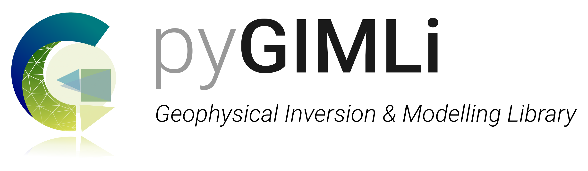
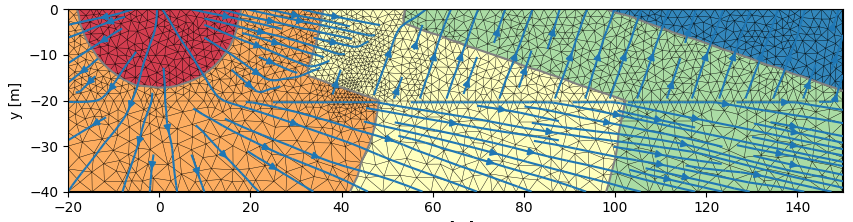
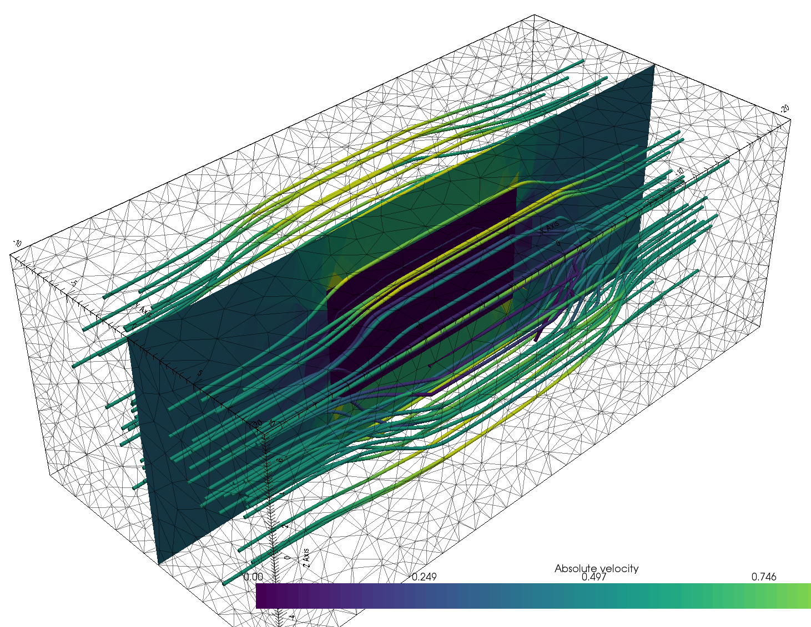
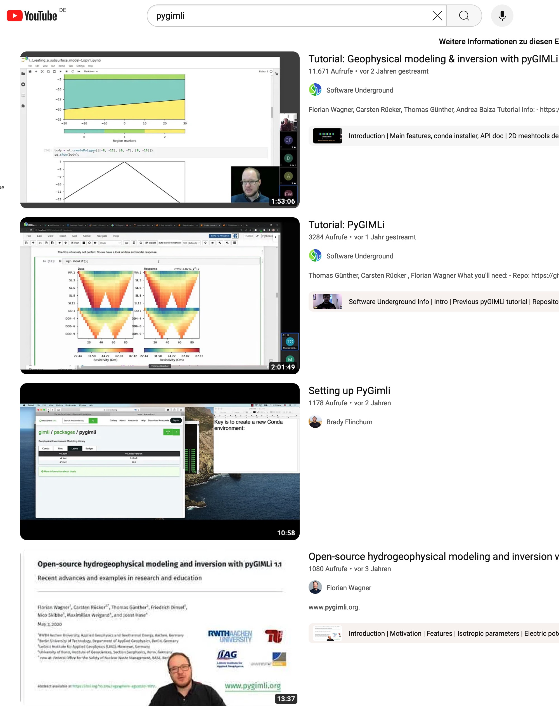
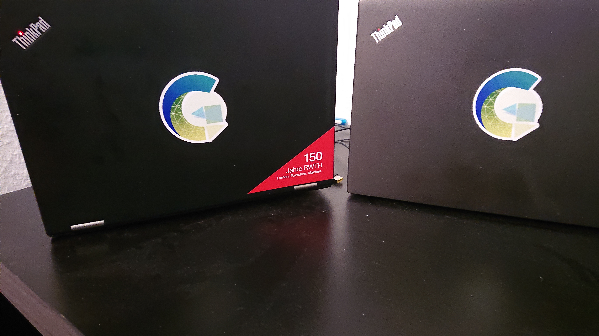
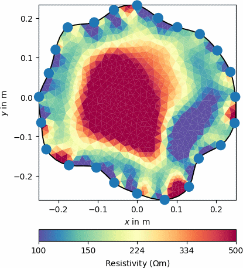
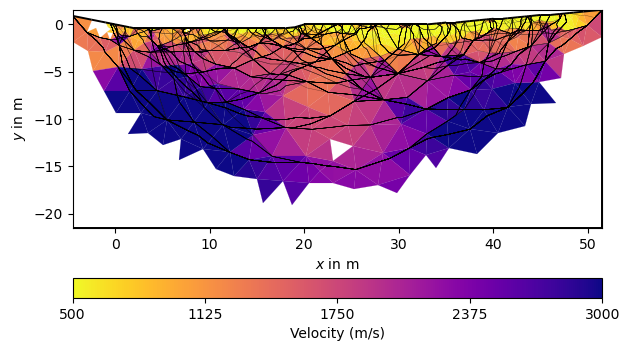
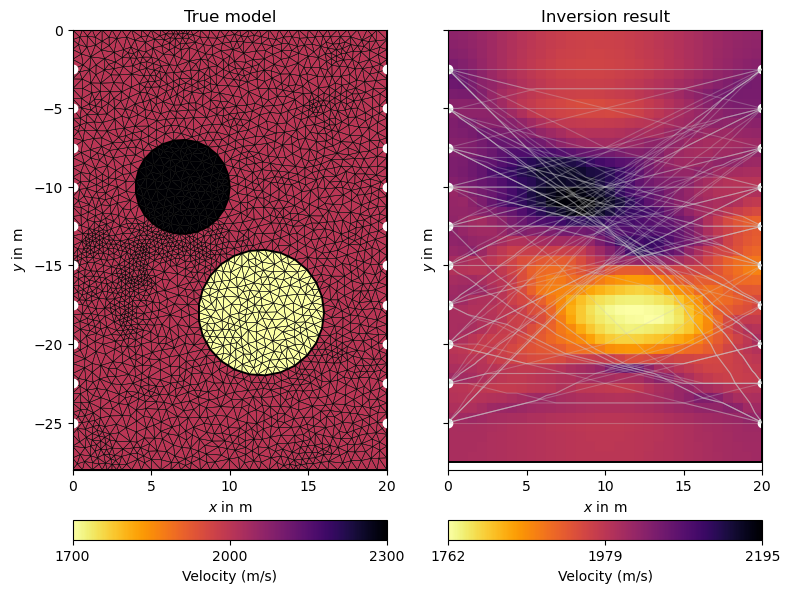

Combining near-surface geophysical data with the open-source library pyGIMLi
![]()
2026-09-20
introducing pyGIMLi
is rather a box full of tools and not a specific tool
aims at making:
- easy things easy
- hard things possible
- everything transparent and reproducible
pyGIMLi is a versatile open-source toolbox with:
- management tools for structured and unstructured meshes in 2D & 3D
- computationally efficient finite-element and finite-volume solvers
- various geophysical forward operators: ERT/IP, Traveltime, Gravimetry, Magnetics, SP, EM
- frameworks for constrained, joint and process-based inversions with region-specific regularization
- open-source, platform compatible, documented & tested code
- suitability for teaching & reproducible research
- v1.0 published in Computers and Geosciences (Rücker et al., 2017) (among Most Downloaded papers, > 430 citations, > 120 uses in peer-reviewed papers)


Existing tutorials
- Transform 2021: creating geometries & meshes, modeling PDEs, synthetic data, inversion (also with external forward operator).
- Transform 2022: fundamental
pyGIMLiobjects (Mesh,DataContainer, matrix types, etc.), geostatistical vs. smoothness regularization, treatment of subsurface regions, adding prior data. - SEG webinar 2024: invert real-life 3D data (Hübner et al., 2017) to tweak your inversion beyond the standard practice.
- Today we practise & focus on combining near-surface geophysical data for joint interpretation and inversion.

What is new since?
- work-in-progress user guide
- Improved 3D visualization powered by pyvista (filters, slices, interactivity)
- 3D gravity and (full-tensor) magnetics operators and managers
- New matrices and matrix generators, e.g. non-explicit (PDE-based) Jacobian matrix
LSQRinversionframework to include parameter relations (from Wagner et al., 2019)- added Structurally coupled cooperative inversion (SCCI) as separate inversion class
MultiFrameModellingframework for temporally/spectrally/spatially constraintsTimelapseERTclass with different strategies, e.g. 4D inversion- New examples on ERT (2D/3D crosshole, 3D surface, timelapse), IP, 3D magnetics
- Many more convenience functions to simplify the code
- Many new papers using pyGIMLi (https://pygimli.org/publist.html)
New since v1.5.0 (SEG webinar)
https://github.com/gimli-org/gimli/releases
- enabled
pip install pygimlifor easier installation (e.g. on Google Colab) - new examples (e.g. reciprocals) and improved old ones
- better access to Jacobian, resolution matrices etc.
- syntactic sugar (
data.show('i'),mesh.show('res'),data.estimateError()) - new mesh functions:
e.g.,submesh(),extract2dUpperSurfaceMesh(),extract2dSlice() - new matrix types, e.g. for BFGS-based inversion
- different inversion frameworks (SD, NLCG, GN, L_BFGS, BFGS)
- fully complex-valued (FD) ERT-IP inversion (also for TD)
- improvements in gravity, magnetics and TDEM
- a lot of of bug fixes and improved docstrings
Join the pyGIMLi user community!

“In open source, we feel strongly that to really do something well, you have to get a lot of people involved.”
– Linus Torvalds
- Join the
#pyGIMLichat on Mattermost! - Open a discussion or raise an issue on GitHub.
- Contribute to the website via the “Improve this page” button in the right sidebar.
- Add your pyGIMLi-powered publication to this database.
- Send your example to mail@pygimli.org.
- Contribute to the code as described in our contribution guidelines.
The code base – ERT module
- import and export of various formats
- utility functions and data visualization
- array generation and synthetic model simulation
ERTManagerfor data inversion and model outputERTIPManagerfor FD or TD Induced Polarization (IP)TimelapseERT(andCrossholeERT) class for timelapse ERT- spectral IP analysis in
pyBERTmodule (FDIPandTDIP)

The TimelapseERT class
- designed for surface ERT data (crosshole:
CrossholeERT) - different import formats and export of filtered data
- extract data time series with
.showTimeline() - extensive filter function (
t,tmin,tmax,kmax) - masking of data with app. resistivity & error bounds (
.mask()) - automatic masking based on harmonic filtering
- different types of data visualization and PDF generation
- temporal fitting of reciprocal error models
- invert single timesteps, sequentially or full (“4D” inversion)
The CrossholeERT class
- based on
TimelapseERTwith some extra functions - different visualization methods
- adapted mesh generation
- attributes electrodes to boreholes
extractSubsetto retrieve (3D) parts or (2D) planes
Make whole processing chain transparent and reproducible
The code base – traveltime module
- import and export of various formats
- utility functions and data visualization
- array generation and synthetic model simulation
TravelTimeManagerfor data inversion and model output- several convenience functions to evaluate and visualize results

Crosshole traveltime tomography
- based on functions implemented in
traveltimemanager createCrossholeData()allows to generate synthetic crosshole data- inversion and evaluation based on functions given in ‘traveltime’ manager

The code base – joint inversion frameworks
- import and export of various formats
- utility functions and data visualization
- array generation and synthetic model simulation
TravelTimeManagerfor data inversion and model output- several convenience functions to evaluate and visualize results
Cross gradient joint inversion
- please add some important aspects on cross-gradient JI
- and maybe also a nice picture showing the effects comapred to individual inversions
Structurally coupled cooperative inversion (SCCI)
- own class in
pygimli.frameworks - allows structurally coupled multi-method inversions
- coupling strengths adjusted by
scci.a,scci.b,scci.c - visualization of coupling strength per boundary via
drawCWeight
How to get started
- Open Miniforge Prompt () or a Terminal (/).
- Follow the installation guideline on the pyGIMLi website.
Follow without a local installation
You can also visit https://colab.research.google.com, open an empty notebook and type !pip install pygimli tetgen.
pyGIMLi’s ERT and traveltime managers
Let’s start individual!
Goals of this part of the workshop
Get familiar with pyGIMLI’s method managers for ERT and traveltime data.
Learn basic operations such as data import, data filtering, and topography addition.
Perform your first inversion using either your own field data or our provided data sets.
Get to know the basic image appraisal techniques.
Apply tools to compare and jointly interpret individual geophysical data sets.
Takeaway messages:
We familiarized ourselves with the method managers to process and invert ERT and SRT data.
We loaded, filtered, and inverted field data using pyGIMLi and qualitatively evaluated the results
We applied tools that allow us to quantitatively compare and qualitatively evaluate the single inversion results, such as…
- 1D interpolation tools to generate synthetic geoelectrical and acousitic logs
- data point - wise misfit examination to identify regions of decreased model goodness.
We implemented ways to further improve our individual inversions by penalizing individual data points with increased misfit.
Constrained and “structurally-informed” inversions
There’s more than just one data set!
Goals of this part of the workshop
Get to know the possibilities if including a-priori information as constraints into inversions.
Incorporate geological a-priori information into regularization.
Incorporate information extracted from GPR as constraints in ERT.
Apply interactive tools to extract constraints from images or models.
Takeaway messages:
We applied advanced regularization techniques to our individual inversions
We constrained the individual inversions using
- geological borehole information
- GPR reflections
We evaluated and compared the constrained models and quantified the effect of adding a-priori information
Joint inversion of ERT and SRT data
The more, the merrier?
Goals of this part of the workshop
Learn the necessary steps to successfully perform a joint inversion.
Apply the cross-gradient algorithm to jointly invert SRT and ERT using actual field data.
Evaluate and compare the joint inversion results to individually inverted data sets.
Optional: Apply the algorithm to your own data sets!
Takeaway messages:
- fill in main takeaway messages for joint inversion part here
References
pyGIMLi workshop, EAGE NSG 2026, Thessaloniki